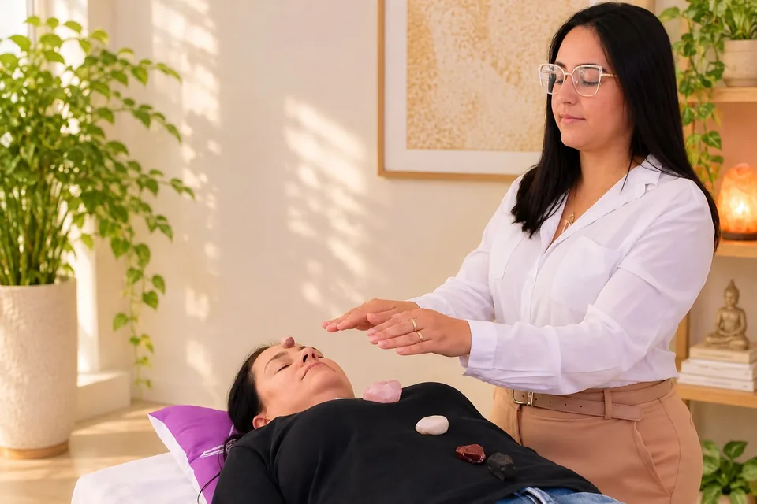

Acupuntura
Atendimento presencial.

Terapeuta Holística
Um espaço para cuidar de você.
Sou Isabela Rezende, terapeuta holística.
Realizo atendimentos on-line e presenciais. Aqui você pode conhecer um pouco do meu espaço e do meu trabalho.
Para conversar sobre o atendimento e saber qual modalidade está disponível para você, entre em contato comigo.
Vamos conversar
Terapias para cuidar do corpo, da mente e da energia. Converse comigo para saber qual faz sentido para você.
Atendimento presencial.

Atendimento presencial.

On-line e presencial.

Florais de Bach.
Registros do espaço e dos atendimentos.



Entre em contato para saber mais sobre os atendimentos e agendar seu horário.
Falar com a Isabela Acompanhe no Instagram